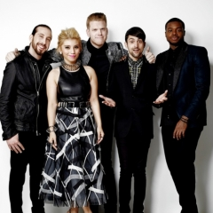
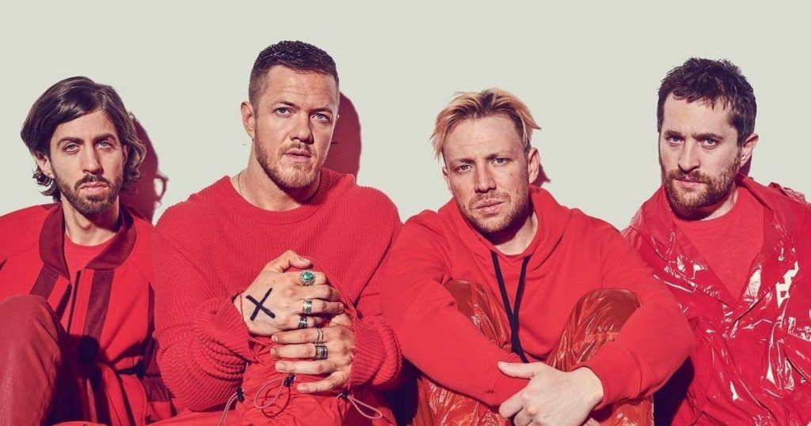
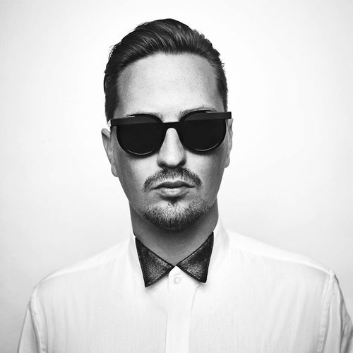

Cara crachá
Nome: Luan Raabe
Idade: 21 anos
Local: Fortaleza - CE
Ao final de cada apresentação sobre as bandas/cantores, há um link para minhas músicas favoritas de cada um.
Idade: 21 anos
Local: Fortaleza - CE
Ao final de cada apresentação sobre as bandas/cantores, há um link para minhas músicas favoritas de cada um.
Cinco vezes tônicos

Pentatonix é um grupo americano a cappella originalmente composto por cinco
vocalistas: Scott Hoying, Kirstin "Kirstie" Maldonado, Mitchell "Mitch" Grassi, Avriel "Avi" Kaplan (
vocalista baixo) e Kevin "KO" Olusola, formado na cidade de Arlington, Texas. O grupo venceu a terceira
temporada do programa The Sing-Off, da rede de televisão norte-americana NBC em 2011, cantando um
arranjo a cappella da canção "Eye of the Tiger", originalmente gravada pela banda de rock Survivor como
sua canção da vitória. O grupo ganhou US$ 200.000 e um contrato de gravação com a Sony. Seu EP de
estréia saiu em 2012, PTX Vol. 1, alcançou o 14º lugar na Billboard 200, e sua versão de 2013, PTX Vol.
2, estreou em 10º lugar na Billboard 200. Eles já venderam mais de 500.000 cópias.Seu albúm que
estreou em 2015 'Pentatonix' chegou a alcançar o 1º lugar na Billboard 200. Seu albúm mais recente 'A
Pentatonix Christmas' lançado em 21 de Outubro de 2016, estreou em 3º lugar na Billboard 200.O grupo
atualmente está na segunda parte do seu tour mundial 'Pentatonix World Tour 2016', juntamente ao grupo
'Us The Duo'. E se preparando para seu especial de natal 'A Pentatonix Christmas Special' que foi ao ar
dia 14 de Dezembro de 2016, transmitido pela rede americana NBC. No dia 12 de maio de 2017, Avi
Kaplan anunciou sua saída do grupo.
Se dinossauros são legais...

Imagine Dragons é uma banda de pop rock formada em Las Vegas nos Estados Unidos,
consistindo do vocalista Dan Reynolds, do guitarrista Wayne Sermon, do baixista Ben McKee e do baterista
Daniel Platzman. A banda primeiro ganhou exposição com o lançamento do single "It's Time", seguido
por seu álbum de estreia, Night Visions (2012), que resultou nos singles "Radioactive" e "Demons". A
Billboard colocou-os no topo do ranking "Year In Rock" de 2013 e 2017 e nomeou-os como "Banda
Revelação de 2013" e "Melhor banda de 2017". A Rolling Stone nomeou "Radioactive", que detém o
recorde da maioria das semanas na Billboard Hot 100, como o "maior hit de rock do ano"
(2013), e a MTV os chamou de "a maior banda de breakout do ano" (também em 2013).
O segundo álbum de estúdio da banda, Smoke + Mirrors (2015), alcançou a primeira posição na Billboard
200 dos Estados Unidos, bem como também alcançou o topo das tabelas musicais do Canadá e Reino
Unido. O álbum foi precedido pelo single "I Bet My Life", e pelo segundo e terceiro single,
"Gold" e "Shots". A banda então embarcou em uma turnê mundial de dez meses, o que levou a um breve hiato
em 2016, com performances ocasionais e contribuições de trilhas sonoras durante o restante do ano.
A banda lançou seu terceiro álbum de estúdio, Evolve (2017), que resultou em três singles no topo das
paradas musicais, "Believer", "Thunder" e "Whatever It Takes". O álbum alcançou o top cinco na maioria
dos países. Após a conclusão do ciclo de Evolve e de sua turnê mundial subsequente, Imagine Dragons
lançou seu quarto álbum de estúdio, Origins (2018). Enquanto todos os quatro álbuns foram comercialmente
bem sucedidos, a recepção da crítica foi mista.
Imagine Dragons ganhou três American Music Awards, nove Billboard Music Awards, um Grammy Award e um
World Music Award. Em maio de 2014, a banda foi indicada para quatorze prêmios na Billboard Music
Awards, incluindo o de "Artista do Ano" e o "Milestone Award", que reconhece a inovação e a criatividade
de artistas de diferentes gêneros. Imagine Dragons vendeu mais de 20 milhões de álbuns e 35 milhões de
singles em todo o mundo. Em abril de 2018, a banda foi indicada mais de 11 vezes para o Billboard
Music Awards.
Em dezembro de 2019, em declaração à CNN, o vocalista Dan Reynolds anunciou que a banda faria uma pausa.
Isso porque o grupo estava sentido a necessidade de passar maior tempo com a família e amigos, visto que
muitos integrantes já estavam a mais de dez anos na rotina da estrada.
Após uma pausa de mais de um ano, a banda voltou a lançar novos trabalhos no dia 12 de março de 2021
liberando dois singles: "Follow You" e "Cutthroat". Dois dias depois, dia 16, o grupo liberou o
videoclipe oficial de "Follow You". Em 02 de julho, foi lançado o terceiro single "Wrecked", música
que homanegeia a cunhada do vocalista.. Dois meses depois, em 03 de setembro, se deu o lançamento do
quinto álbum de estúdio da banda, Mercury - Act 1.
Nome difícil da disgraça

Robin Schulz (nascido em 28 de abril de 1987) é um DJ, músico e DJ e produtor alemão de música
eletrônica, com muitas produções em estilo Tropical house. No dia 4 de fevereiro, ele lançou seu
primeiro single, um remix de "Waves", do artista neerlandês de hip hop Mr. Probz. Seu segundo single,
lançado dia 6 de junho de 2014, foi um remix de Lilly Wood and the Prick intitulado "Prayer in C",
originalmente do álbum Invincible Friends, de 2010. Ambos os remixes tocaram em muitos países europeus e
nos Estados Unidos, levando ao reconhecimento internacional, estão presentes em seu primeiro álbum de
estúdio, Prayer, o segundo álbum foi lançado em Maio de 2015, intitulado Sugar, o mesmo possui três
novos Singles: "Show Me Love" na qual contou com participação de Richard Judge, e "Heatwave" com o
cantor Akon, além da faixa que deu nome ao álbum, "Sugar" com Francesco Yates. Ele cofundou Lausbuben
Records, com Daniel Bruns e Christopher Noble. Suas referências na música eletrônica são Todd Terry,
Armand van Helden, Roger Sanchez e Tiësto.
Não a marca de produtos alimentícios
Aurora Aksnes (Stavanger, 15 de junho de 1996), conhecida profissionalmente apenas como
Aurora e as vezes estilizdo em caixa alta como AURORA, é uma cantora e compositora norueguesa. Seu EP
de estreia "Running with the Wolves" foi lançado pela gravadora Decca Records em maio de 2015,
recebendo grande aprovação de blogueiros de música e da imprensa. A artista já gravou dois covers de
maior visibilidade, o primeiro de "Half the World Away", da banda Oasis, para uma propaganda Natalina de
John Lewis e o segundo cover da música "Nature Boy" de Nat King Cole. Ganhou algum maior
reconhecimento a partir de uma publicação de Katy Perry ao dizer que havia gostado da música
"Runaway".